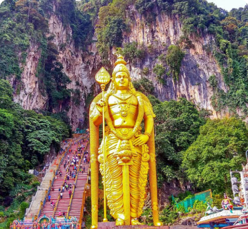

Popular Location
For every one of us, travel came first. We’ve spent years living as nomads, pioneers, and voyagers— from island hopping in the

Istanbul, Turkey
Istanbul is a major city in Turkey that straddles Europe.

Kuala Lumpur, malaysia
A 272-step long trek leads you to this century.

Seoul, South Korea
South Korea officially the Republic of Korea is a country in East Asia.